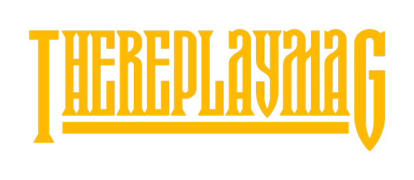

Independent
Self-directed, culturally aware and distinct from generic media polish.

TheReplayMAG is an independent culture publication. The design system should feel authored, immediate and editorial, never like a SaaS product with culture content dropped into it.
Self-directed, culturally aware and distinct from generic media polish.
Typography, pacing and imagery lead. Interface chrome stays secondary.
Scale shifts, interruption and contrast create energy without visual chaos.
Give the wordmark room. When Replay is the primary brand, it should not be reduced to a decorative corner mark.
Inter Tight or equivalent editorial grotesk treatment. Large scale, tight leading and strong weight are preferred.
Inter keeps long-form reading calm and neutral while headlines, imagery and modes carry personality.
Use authored portrait, performance, documentary and scene-led imagery. Avoid generic stock and overly polished lifestyle photography.
Dark, light and culture modes may change atmosphere while preserving the same hierarchy.
Keep it compact. Search and section navigation can become editorial moments through typography.
Bring stories and sections forward. Reduce preamble and never bury content below decorative hero space.